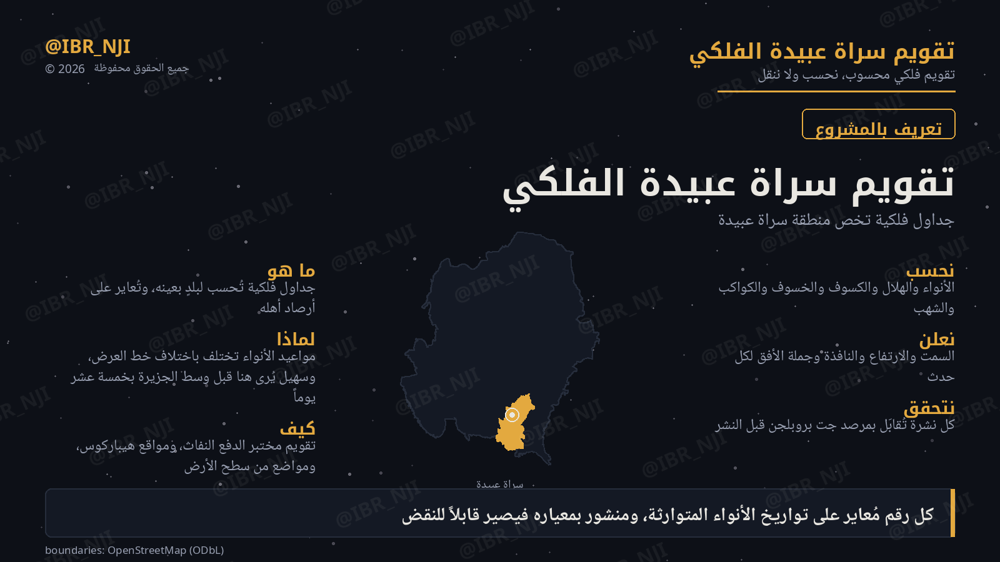

زيج سراة عبيدة
جداول فلكية تخص منطقة سراة عبيدة — تُحسب لخط عرض 18.0993° شمالاً وارتفاع 2360 متراً، وتُعايَر على تواريخ الأنواء المتوارثة، ويُتحقَّق منها مقابل مرصد جت بروبلجن.

سهيل — فجر الأحد ٩ أغسطس ٢٠٢٦
موعد صعب يلزمه أفق جنوبي شرقي مكشوف تماماً، والغبار يؤخّره. والتقويم النجدي يعلنه ٢٤ أغسطس.
ما «الزيج»؟
مصطلح فلكي دقيق لا استعارة: جداول تُحسب لبلدٍ بعينه، وتُعايَر على أرصاد أهله. كزيج البتاني، والزيج الحاكمي، وزيج أُلُغ بيك — وكلٌّ منها حُسب لموضعه وزمانه، ولم يُنقل عن غيره.
كنتُ إذا أصبحتُ في حاجةٍ
أستعملُ التقويمَ والزِّيجافأصبح الزِّيجُ كتصحيفهِ
وأصبح التقويمُ تعويجا
لماذا موقع بعينه؟
مواعيد الأنواء تختلف باختلاف خط العرض. وسهيل نجم جنوبي (ميله −52.7°)، فكلما اتجهتَ جنوباً بكّر طلوعه.
وبين سراة عبيدة والرياض ستّ درجات ونصف من خط العرض — تعني خمسة عشر يوماً في موعد سهيل.
كيف يُحسب
والفروض تُعلن ولا تُخفى
- الأفق مستوٍ — ولا يُحتسب انخفاض الأفق، لأن الأرض جنوباً شرقياً بارتفاعنا.
- الطلوع الاحتراقي: ارتفاع النجم الحقيقي ≥ 1° والشمس على عمق 9°.
- الضغط 760 هكتوباسكال ومعامل الخفوت 0.102 — وهما قيمتا ارتفاع 2360 متراً.
المعايرة
المعيار لم يُختر اعتباطاً. جُرِّبت العتبات من 6° إلى 13°، مع الانكسار وبدونه، حتى وُجد ما يعيد إنتاج تواريخ سهيل المتوارثة:
| الموقع | المتوارث | ما يخرجه الزيج |
|---|---|---|
| جازان | ٧ أغسطس | ٧ أغسطس ✓ |
| عرعر | ٨ سبتمبر | ٨ سبتمبر ✓ |
| الرياض | ٢٤ أغسطس | ٢٣ أغسطس — بيوم |
وفي الهلال: المحرّك يعيد إنتاج قاعدة تقويم أم القرى ٣٦ من ٣٦ شهراً.
التحقق
كل نشرة تُقابَل بـJPL Horizons بإحداثي الموقع نفسه قبل النشر:
| الكمية | Horizons | الزيج | الفرق |
|---|---|---|---|
| ارتفاع المشتري | 6.367° | 6.35° | 0.02° |
| استطالة الزهرة | 45.8919° | 45.892° | 0.0001° |
| استطالة الهلال من مكة | 12.0525° | 12.0505° | 0.002° |
ومطابقات داخلية: معامل غاما لكسوف ١٢ أغسطس خرج +0.8977 مطابقاً للمنشور.
ماذا يقدّم
ولكل حدث: التاريخ · الساعة · السمت بالدرجات · الارتفاع · طول النافذة · وجملة الأفق المطلوب.
قواعد الصدق
- الهندسي رقم قاطع، والاحتمالي نافذة. فالاقتران والخسوف بالدقيقة، وأما الطلوع الاحتراقي فنافذة موصوفة بما يؤخّرها — والغبار أولها.
- يُنشر المعيار مع الرقم دائماً — فمن أراد نقضه عرف على ماذا ينقض.
- ما لم يُتحقق منه لا يُنشر. وكل رقم مصنَّف في سجل معلن.
- الرقم يُفصل عن تفسيره — فما لم يُحسب يُوسَم تفسيراً مقترحاً.
وما هو قيد التحقق
تُعلن حدود العمل كما تُعلن نتائجه:
- انزياح المنازل — الحساب يرجّح أن جداول المنازل الشعبية تؤرّخ مرور الشمس في المنزلة لا طلوع نجمها. والأطروحة قائمة على تواريخ منقولة لم تُقابل بمطبوعة، فلا تُنشر حتى يُتحقق منها.
- عتبة الرؤية بدلالة لمعان النجم — معادلة مرشّحة، معطَّلة حتى يحسمها الرصد.
- النثرة — حُسبت بنجم مفرد، والمنزلة في التراث لطخة ضبابية. فحسابها ناقص ومعلوم.
البطاقات